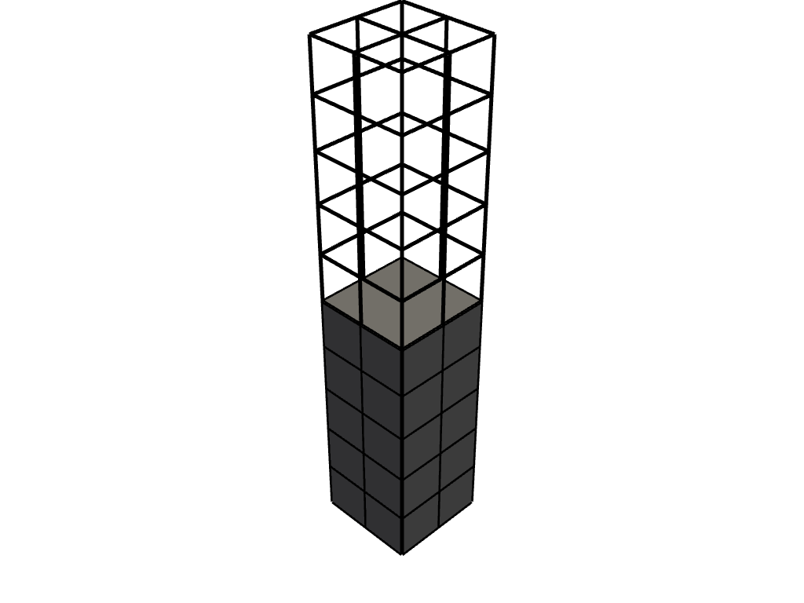

extract_cells#
- UnstructuredGridFilters.extract_cells(ind, progress_bar=False)#
Return a subset of the grid.
- Parameters
- ind
np.ndarray Numpy array of cell indices to be extracted.
- progress_barbool,
optional Display a progress bar to indicate progress.
- ind
- Returns
pyvista.UnstructuredGridSubselected grid.
Examples
>>> import pyvista >>> from pyvista import examples >>> grid = pyvista.read(examples.hexbeamfile) >>> subset = grid.extract_cells(range(20)) >>> subset.n_cells 20 >>> pl = pyvista.Plotter() >>> actor = pl.add_mesh(grid, style='wireframe', line_width=5, color='black') >>> actor = pl.add_mesh(subset, color='grey') >>> pl.show()
